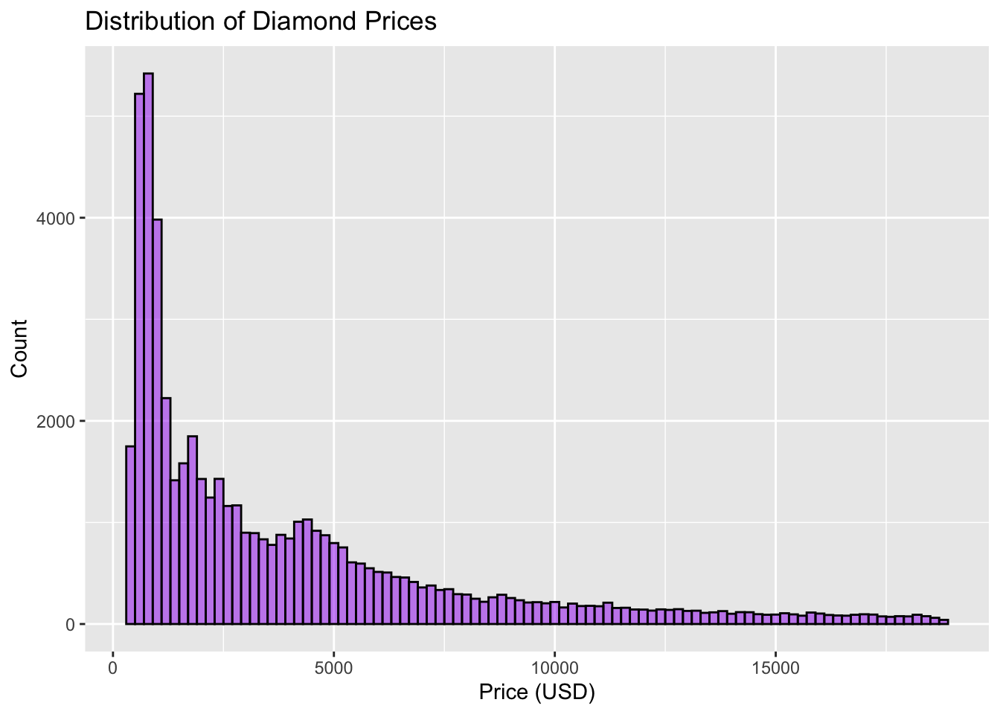
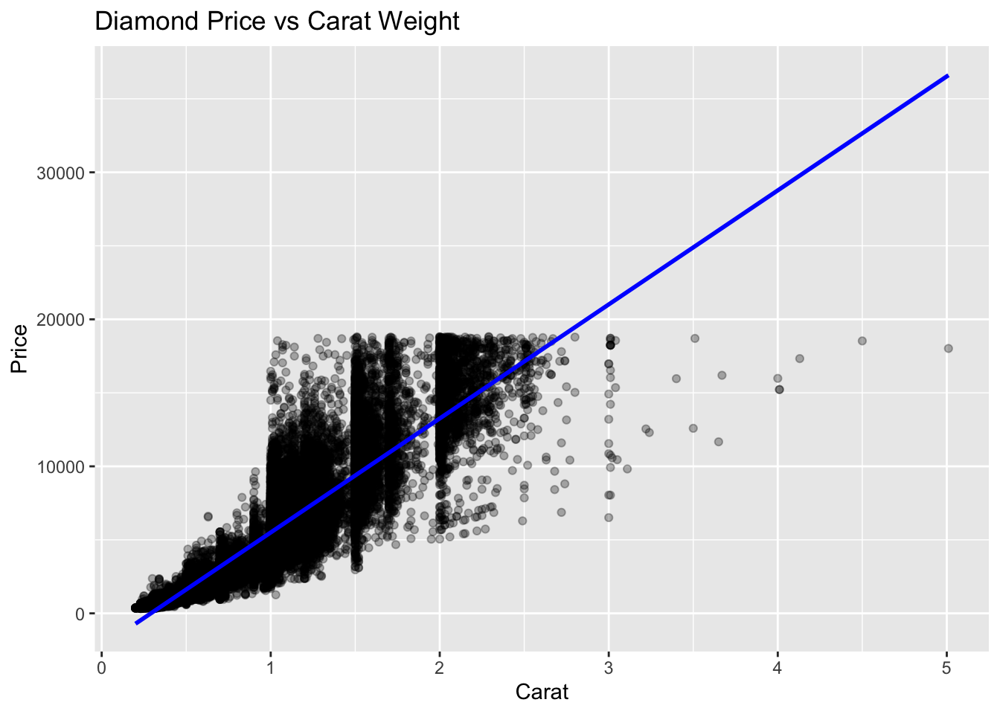

In this project, I will use the dataset diamonds.”A dataset containing the prices and other attributes of almost 54,000 diamonds.” The goal is to fit a linear regression model to examine how carat explains the variation in diamond prices.
load the data
library(ggplot2)
data(diamonds)
head(diamonds)## # A tibble: 6 × 10
## carat cut color clarity depth table price x y z
## <dbl> <ord> <ord> <ord> <dbl> <dbl> <int> <dbl> <dbl> <dbl>
## 1 0.23 Ideal E SI2 61.5 55 326 3.95 3.98 2.43
## 2 0.21 Premium E SI1 59.8 61 326 3.89 3.84 2.31
## 3 0.23 Good E VS1 56.9 65 327 4.05 4.07 2.31
## 4 0.29 Premium I VS2 62.4 58 334 4.2 4.23 2.63
## 5 0.31 Good J SI2 63.3 58 335 4.34 4.35 2.75
## 6 0.24 Very Good J VVS2 62.8 57 336 3.94 3.96 2.48summary(diamonds)## carat cut color clarity depth
## Min. :0.2000 Fair : 1610 D: 6775 SI1 :13065 Min. :43.00
## 1st Qu.:0.4000 Good : 4906 E: 9797 VS2 :12258 1st Qu.:61.00
## Median :0.7000 Very Good:12082 F: 9542 SI2 : 9194 Median :61.80
## Mean :0.7979 Premium :13791 G:11292 VS1 : 8171 Mean :61.75
## 3rd Qu.:1.0400 Ideal :21551 H: 8304 VVS2 : 5066 3rd Qu.:62.50
## Max. :5.0100 I: 5422 VVS1 : 3655 Max. :79.00
## J: 2808 (Other): 2531
## table price x y
## Min. :43.00 Min. : 326 Min. : 0.000 Min. : 0.000
## 1st Qu.:56.00 1st Qu.: 950 1st Qu.: 4.710 1st Qu.: 4.720
## Median :57.00 Median : 2401 Median : 5.700 Median : 5.710
## Mean :57.46 Mean : 3933 Mean : 5.731 Mean : 5.735
## 3rd Qu.:59.00 3rd Qu.: 5324 3rd Qu.: 6.540 3rd Qu.: 6.540
## Max. :95.00 Max. :18823 Max. :10.740 Max. :58.900
##
## z
## Min. : 0.000
## 1st Qu.: 2.910
## Median : 3.530
## Mean : 3.539
## 3rd Qu.: 4.040
## Max. :31.800
## ?diamondsVisualizing Price Distribution
ggplot(diamonds, aes(x = price)) +
geom_histogram(binwidth = 200, fill = "purple",color = "black", alpha = 0.5) +
labs(title = "Distribution of Diamond Prices", x = "Price (USD)", y = "Count") This graph shows a right-skewed distribution, with most diamond prices falling below $5000.
Check the Correlation
cor(diamonds[, c("price", "carat", "depth", "table", "x", "y", "z")])## price carat depth table x y
## price 1.0000000 0.92159130 -0.01064740 0.1271339 0.88443516 0.86542090
## carat 0.9215913 1.00000000 0.02822431 0.1816175 0.97509423 0.95172220
## depth -0.0106474 0.02822431 1.00000000 -0.2957785 -0.02528925 -0.02934067
## table 0.1271339 0.18161755 -0.29577852 1.0000000 0.19534428 0.18376015
## x 0.8844352 0.97509423 -0.02528925 0.1953443 1.00000000 0.97470148
## y 0.8654209 0.95172220 -0.02934067 0.1837601 0.97470148 1.00000000
## z 0.8612494 0.95338738 0.09492388 0.1509287 0.97077180 0.95200572
## z
## price 0.86124944
## carat 0.95338738
## depth 0.09492388
## table 0.15092869
## x 0.97077180
## y 0.95200572
## z 1.00000000Scatter Plot: Price vs Carat
ggplot(diamonds, aes(x = carat, y = price)) +
geom_point(alpha = 0.3) +
geom_smooth(method = "lm", col = "blue") +
labs(title = "Diamond Price vs Carat Weight", x = "Carat", y = "Price")## `geom_smooth()` using formula = 'y ~ x'
Price, Carat, Linear Regression Model
Price_Carat <- lm(price ~ carat, data=diamonds)
summary (Price_Carat)##
## Call:
## lm(formula = price ~ carat, data = diamonds)
##
## Residuals:
## Min 1Q Median 3Q Max
## -18585.3 -804.8 -18.9 537.4 12731.7
##
## Coefficients:
## Estimate Std. Error t value Pr(>|t|)
## (Intercept) -2256.36 13.06 -172.8 <2e-16 ***
## carat 7756.43 14.07 551.4 <2e-16 ***
## ---
## Signif. codes: 0 '***' 0.001 '**' 0.01 '*' 0.05 '.' 0.1 ' ' 1
##
## Residual standard error: 1549 on 53938 degrees of freedom
## Multiple R-squared: 0.8493, Adjusted R-squared: 0.8493
## F-statistic: 3.041e+05 on 1 and 53938 DF, p-value: < 2.2e-16summary(Price_Carat)$r.squared## [1] 0.8493305Intercept -2256.36 Slope 7756.43 Price = 7756.43 carat -2256.36 R squared = 0.8493305 Slope 7756.43 . This means that for every 1 unit increase in carat weight, the price of the diamond increases by $7756.43 on average. Intercept -2256.36. This represents the predicted price of a diamond when carat = 0. However, since diamonds with zero carat weight do not exist, this value is not meaningful in practice. R squared = 0.8493305. means that approximately 84.93% of the variance in diamond prices is explained by the carat variable alone.